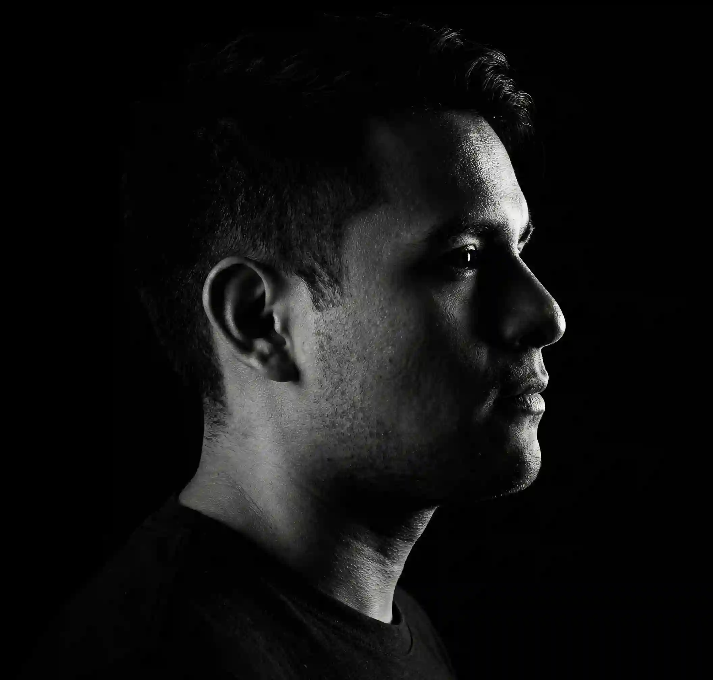

About Me
I learned to mix music when I was 13, and since then I have felt connected to every sound, every rhythm, and every song. I have participated in several events, and my biggest dream is to play my own songs at Tomorrowland.
FAQ - Frequently Asked Questions
Does DJ Alow perform at private events?
▶
Yes, DJ Alow performs at all kinds of events.
How to contact DJ Alow?
▶
You can call or send a WhatsApp message to 951 499 7616, or you can send me an email at
junidrops.official@gmail.com.
Proposals, collaborations, and quotes
▶
On the contact page, you can describe your situation to me and I will get back to you as soon as
possible.